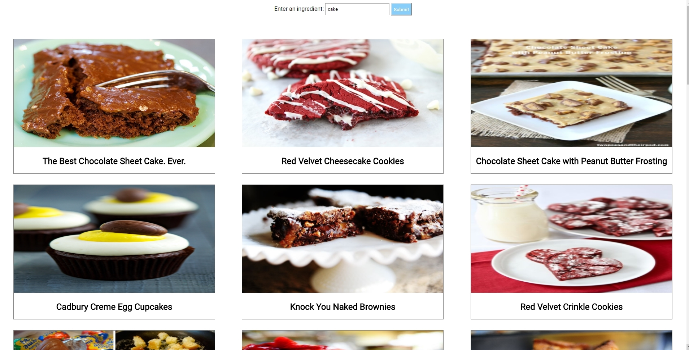

Assignment Revisions and Corrections will be noted here.
The purpose of this assignment is to give you practice building an node.js application that accesses a public API, uses the express.js framework and uses client side javascript that manipulates the DOM (document object model) directly.
This assignment is is based on work started in Tutorial 06 and accesses the food2fork public API. (If there is some other API you are keen to work with then discuss with me the possibility of substituting it for the recipe API instead.)
The components are:
Server build with just Node.js and the Express.js framework.
Public food2fork API
Client side application page served by the server.
Client side javascript that manipulates the DOM (HTML elements) directly based on the data the client has requested from the server.
Client-Server data exchange should be based on JSON
Assignment restrictions:
You are now free to use Express.js and whatever other npm modules you find useful though no other ones are necessary for the assignment.
Note: this, and other assignments, can be done in pairs if you want to work with a partner. Please submit one copy to culearn with both your names on it.
Marking: This assignment is based on 16 specific numbered design requirements numbered R1.1... R3.7. Two marks each for a total of 32 marks. We will award 2 marks for those requirements that are met and well implemented, 1 mark for those only partly met or met but poorly implmented, and 0 marks for any requirement not met.
In addition there are some general programming and good practice requirements that you must satisfy. These requirements are numbered R0.1, R0.2 .... Be prepared to lose marks if these requirements are not satisfied. If requirement R0.0 or R0.1 is not met the assignment grade will be 0.
The following requirements will pertain to all your assignments regardless of what your application is supposed to do (i.e. regardless of the design requirements). These requirements are to ensure that your code is readable and maintainable by other programmers (or readable by TA's in our case), and that your program adopts good practices. You will lose 5 marks from your total assignment mark for each of the following requirements that is not satisfied. If, however, you do not satisfy requirement R0.0 or R0.1 you will get 0 for the assignment.
R0.0) IMPORTANT Uniqueness Requirement. The solution and code you submit MUST be unique. That is, it cannot be a copy of, or be too similar to, someone else's code, or other code found elsewhere. A mark of 0 will be assigned to any assignment that is judged by the instructors or the TA's not to be unique. (You are free to use any code posted on our course web site as part of our assignment solution.)
R0.1) CODE SUBMISSION ORGANIZATION AND COMPILATION: You should submit an app.js file and whatever directories and data is required. The TA's will then execute your app with node app.js. You must also provide a ReadMe.txt file telling the TA how to setup and run your app. Your ReadMe.txt must tell the TA what OS your developed under and what browser you tested your code with. If you compress your code when submitting to culearn you must use only .zip format (not .rar or .tar or whatever). Though you are permitted to write code on Windows 8, Linux, or Mac OS the code should be generic enough to be OS agnostic. Nevertheless, your ReadMe.txt file must says which OS you developed. Your code must work with at least a current Chrome or Firefox browser.
R0.2) All of your variables and functions should have meaningful names that reflect their purpose. Do not follow the convention common in math courses where they say things like: "let x be the number of customers and let y be the number of products...". Instead call your variables numberOfCustomers or numberOfProducts. Your program should not have any variables called "x" unless there is a good reason for them to be called "x". (One exception: It's OK to call simple for-loop counters i,j and k etc. when the context is clear and VERY localized.) Remember javascript does not have typed variables or functions so choosing good names is even more important. Many functions in javascript are annonymous (have no name) and so the name of the variable that refers to them is even more important.
R0.3) Code Comment Requirements: Comments in your code must coincide with what the code actually does. It is a very common bug in industry for people to modify code and forget to modify the comments and so you end up with comments that say one thing and code that actually does another. By the way, try not to over-comment your code but instead choose good variable names and function names that make the code more "self commenting".
R0.4) Citation Requirements: If you use code from other sources you should cite the source in comments that appear with the code. If the source is an internet website then put the URL in the comments. You may draw on code from outside sources but this may not form the complete solution you are handing in.
VERY IMPORTANT: Any sample code fragments provided may have bugs (although none have been put there intentionally). It is part of your task to identify errors in the requirements and sample code. Please report errors so they can be fixed and an assignment revision noted.
Public API's (often referred to as RESTful API's) have become very popular. They typically serve JSON data based on client queries that use HTTP messages and HTTP verbs (like GET and POST). They also respect the stateless nature of HTTP -the client provides everything in each query that the server needs to respond. API's don't typically serve web-pages rather they serve data that other servers or "smart" clients can use to populate web pages. Or, in the internet of things, maybe no web pages are ever involved. API's are nice because their data can be consumed and repackaged in many different ways.
We want to build a client-server app that uses the www.food2fork API for providing recipes based on ingredients specfied by the client. (If you want to substitute a different API in the assignment please discuss it with me ahead of time.)
The client should access the application at http://localhost:3000/recipes and they should be presented with a webpage that looks like the following:

R1.1) The server should be built as an Express.js application It could be a very simple or minimal express app or use many express features -no particular complexity is specified.
R1.2) The server application should make use of a package.json file to specify all the npm modules needed by your app (possibly only express.js) The marker should be able to install all the module by executing npm install. DO NOT submit installed npm modules with your assignment. We want to install those ourselves and keep the submitted code size small. In other words, don't submit a node_modules directory with your code.
R1.3) Your package.json file should list specific version numbers of the modules you install. Don't have it install "the latest" module. You must be specific about the version number.
R1.4) With Express.js and package.json comes new ways of launching your server app. Up until now we have always lauched with the command node myServer.js. Make sure your README.txt file tells us exactly how to launch your app; the marker will not be expected to try and figure it out. Also include the instructions for installing the npm modules you need in your README.txt file.
R1.5) The server should obtain recipe data from the www.food2fork public API. The server should contain the required AP ID which you need to obtain from www.food2fork.
R1.6) The Server should provide its clients with recipe data when asked in the form of a JSON object. (The request could be either a GET or POST request depending on how you organize your application.)
R1.7) If your server needs to serve static files to the client then it should provide a static server using the express use(express.static ...) middleware. If your application does not require a static server part then you don't need to provide this.
R1.8) The amount of data served by the server should be reasonable. (If the food2fork queries provide too much data the server should reduce it to a reasonable amount before sending the response to the client). Thus the client can be coded to render all the data provided by the server.
R2.1) The recipe data exchanged between client and server should be in the form of JSON object strings. (The initial launch of the client web page will just be the result of a GET request client web page).
R3.1) The client should be able to reach the app at http://localhost:3000/recipes. (You could also allow http://localhost:3000 as an option.) When reached the client should see a web page like the one above with some default recipes.
R3.2) The client should be able to start the app with http://localhost:3000/recipes/?ingredients=Basil,Cumin in which case the recipes shown would be those obtained from food2fork that include those ingredients.
R3.3) When the client types an ingredient into the labelled text box and presses the "submit" button (or whatever you want to call it) then a page should be refreshed with new recipe data obtained from the server.
R3.4) A application should allow the user to enter a single ingredient or a list of comma-separated ingredients when requesting recipe data
R3.5) The client side javascript should use the JSON recipe data obtained from the server and modify the application web page by manipulating the DOM. That is, add or remove the appropriate HTML elements using client-side javascript (either native javascript or jQuery).
R3.6) The client web page should show the recipe images as shown above an layed out as above or in some other appropriate organized fashion.
R3.7) The recipe images or recipe names should be active links. If the user clicks on one the brower should open the food2fork.com page for that recipe in a new tab.